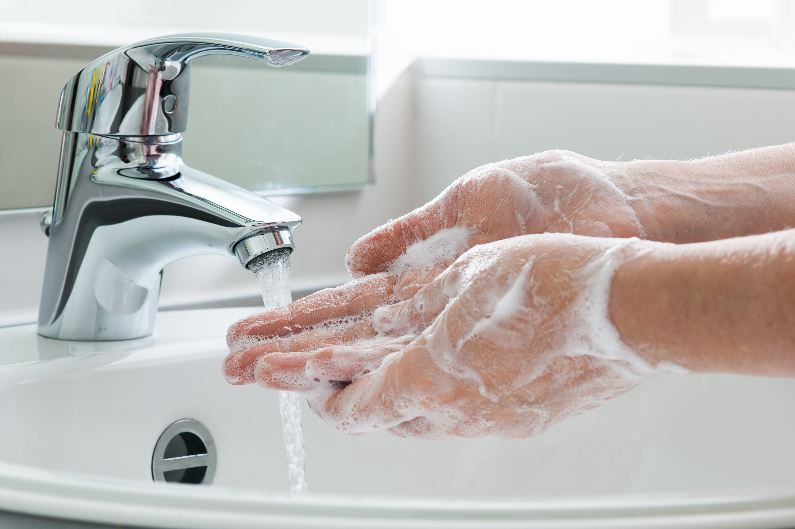

Good personal hygiene helps you stay healthy, feel confident, and be comfortable around others. Building a few simple habits into your daily routine can make a big difference. Washing your hands regularly is one of the easiest ways to prevent the spread of germs. Tip: When soap and water aren't available, use an alcohol-based hand sanitizer. Regular bathing or showering helps remove sweat, dirt, oil, and germs from your skin. You may need to shower more often after exercise, sports, or activities that make you sweat. Taking care of your teeth and gums every day helps prevent cavities, bad breath, and gum problems. Don't forget your tongue! Gently brushing or cleaning it can help keep your mouth feeling fresh. Healthy skin doesn't require a complicated routine. The basics are keeping your skin clean, moisturized, and protected. Remember: If a skin problem is painful, persistent, or getting worse, talk with a parent or guardian, school nurse, doctor, or other healthcare professional. Sweating is a normal part of being human. Body odor happens when bacteria on the skin interact with sweat. Deodorant helps control or mask body odor, while antiperspirant helps reduce sweating. Follow the product's directions and stop using it if it causes significant irritation. Remember: Sweating and body odor are normal. Good hygiene is about taking care of yourself, not feeling embarrassed about your body. You don't have to be perfect. Hygiene is about creating simple habits that help you stay healthy, comfortable, and confident. Everyone's body and routine are different, so find a routine that works for you and your daily activities. 🧼 Proper Handwashing
When to Wash Your Hands
How to Wash Your Hands Properly
🚿 Bathing and Body Hygiene
Good Showering Habits
🦷 Dental Care
A Good Dental Routine
🧴 Skincare Basics
Simple Skincare Habits
🌿 Deodorant and Body Odor
How to Manage Body Odor
Deodorant vs. Antiperspirant
✅ Daily Hygiene Checklist for Students
🌅 Morning
🏫 During the School Day
🌙 After School / Evening
⭐ Remember